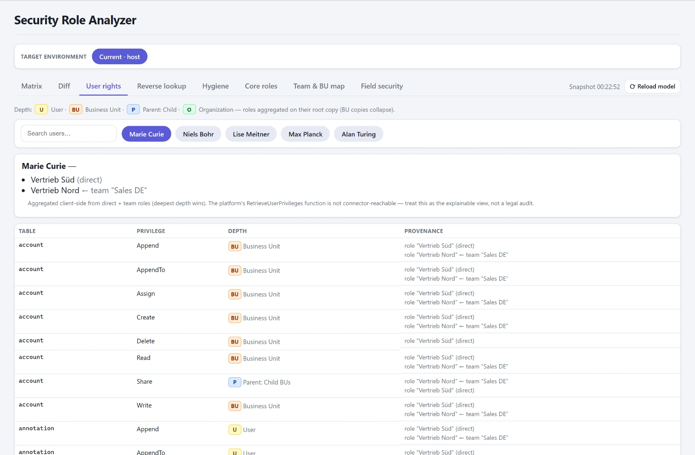

Nach dem Release-Zug und den Prüfungen vor dem Import war die Konsole ein Werkzeug für die Entwicklung. Die Fragen, die mir im Juli gestellt wurden, kamen aus dem Betrieb, und sie hatten eine Gemeinsamkeit: Das Maker-Portal und das Admin Center beantworten sie entweder mühsam oder gar nicht.
Plugin-Fehler sieht man nicht
Dataverse schreibt Plugin-Traces in eine Tabelle, die im Maker-Portal praktisch unbenutzbar ist. Wer wissen will, ob ein Plugin gerade Ausnahmen wirft, nimmt den Plugin Trace Viewer aus der XrmToolBox. Der ist gut. Er läuft nur auf einem Desktop, braucht je Umgebung eine Anmeldung, und von den Leuten, die im Betrieb die Frage stellen, hat ihn niemand installiert.
Seit dem 3. Juli gibt es in der Konsole einen Stream über die Trace-Logs, der alle fünfzehn Sekunden nachlädt und pausiert, sobald der Browser-Tab in den Hintergrund geht. Gefiltert wird auf dem Server nach Zeitfenster, Typ, Message, Tabelle, synchron oder asynchron, wahlweise nur Ausnahmen. Der schwere Meldungsblock wird erst beim Aufklappen einer Zeile geladen, nie im Stream. Dazu eine Zeitleiste je Correlation-ID, die zeigt, welches Plugin welches ausgelöst hat, und Laufzeit-Aggregate je Plugin und Message. Die Frage „ist das Plugin schuld" ist damit in einer Minute beantwortet statt in einer Stunde.
Rollen, und was sie wirklich bewirken
Für Berechtigungen gab es vorher eine Excel-Matrix, die jemand einmal aus den Rollen abgeschrieben hatte, und den Security Role Explorer in der XrmToolBox, mit dem man eine Rolle ansieht. Die Frage, die im Projekt gestellt wird, ist aber eine andere: Was darf dieser Benutzer tatsächlich, über alle seine Rollen, direkt und über Teams vererbt? Und umgekehrt: Wer darf eigentlich diese Tabelle löschen?
Der Role Analyzer beantwortet beides. Er arbeitet auf einem zwischengespeicherten Abbild des Sicherheitsmodells, weil es bei einem mittelgroßen Tenant knapp dreihundert Rollen sind, davon rund zweihundertfünfzig mitgeliefert. Er zeigt die Matrix aus Rolle, Tabelle und Privileg mit Tiefe, die effektiven Rechte eines Benutzers mit Herkunftspfad, die umgekehrte Suche und Hygiene-Befunde wie nicht zugewiesene Rollen. Die Team-Vererbung war der schwierige Teil: Die Abfrage über Teams braucht verschachtelte Bedingungen, die der Dienst nicht immer mag, deshalb laufen direkte und vererbte Zuweisung als zwei getrennte Abfragen. Scheitert die zweite, fehlt die Vererbung, aber die direkte Prüfung bleibt richtig.

Der Role Analyzer war Ende Juli für eine Woche aus der App, weil er das Bundle um 120 Kilobyte vergrößerte und der Erststart darunter litt. Am 4. August kam er zurück, diesmal nachgeladen, wenn man ihn öffnet. Meine Annahme, dass der Code-App-Player nachgeladene Chunks nicht ausliefert, war falsch, und das habe ich erst an diesem Tag geprüft statt geglaubt.
Sind die Rollen heil angekommen?
Am selben Tag entstand der Role Comparer, und der beantwortet die Frage, die mich im Projekt am meisten beschäftigt hat. Eine Sicherheitsrolle, die per Solution transportiert wird, behält ihre ID. Eine Rolle, die jemand im Ziel von Hand nachgebaut hat, weil der Transport gerade nicht ging, trägt denselben Namen und eine andere ID. Heute sieht das richtig aus. Ab morgen driftet es, und kein Import wird diese Rolle je aktualisieren, weil sie für Dataverse eine andere ist.
Der Comparer matcht deshalb über den Namen, nicht über die ID, und markiert gleiche Namen mit abweichender ID als rebuilt. Je Zelle steht die Zahl der Privilegien und wie viele davon diese Umgebung anders vergibt als die Referenz. Eine Umgebung, die nicht lesbar war, zeigt ein Fragezeichen und gilt nie als unauffällig. Der Bereich ist mit Absicht lesend. Eine driftende Rolle gehört transportiert, nicht im Ziel bearbeitet, denn das erzeugt genau den unmanaged Layer, den der Layer Inspector danach meldet.
Daraus wurde noch am selben Tag mehr: Der aktuelle Stand lässt sich als Baseline einfrieren, und dann wechselt die Frage von „stimmen die Umgebungen überein" zu „was hat sich seit dem Einfrieren geändert". Aus einem Snapshot entsteht ein Security-Konzept als Dokument, mit Umgebungsübersicht und Privilegienmatrix, mit einem zweiten Snapshot davor ein Änderungskapitel. Das Dokument, das man sonst zu Projektbeginn schreibt und nie nachzieht, wird jetzt erzeugt. Eine erweiterte Baseline mit Business Units, Teams und Field Security habe ich am selben Tag gebaut und wieder ausgebaut: Das Einfrieren dauerte zu lange, und ein Werkzeug, auf das man wartet, benutzt niemand.
Prozesse und Plugins je Umgebung
„Warum läuft der Flow in PROD nicht?" Weil er aus ist. Seit wann, weiß niemand. Der Process Comparer zeigt alle Prozessarten einer Release-Solution als Statusmatrix über die Umgebungen, abweichende Zellen hervorgehoben, mit Ein- und Ausschalten je Zelle und Sammelaktionen über eine Zeilenauswahl. Er begann am 9. Juli als Flow Comparer und deckt seit dem 22. Juli auch klassische Workflows, Business Rules, Actions und Business Process Flows ab. Der Plugin Comparer macht dasselbe für Plugin-Steps und zeigt dazu die Assembly-Version je Umgebung. Ein Step kann existieren und trotzdem gegen eine ältere Assembly laufen.
An diesem Comparer habe ich an einem Tag zwei Dinge über den Konnektor gelernt. Ein Zwei-Optionen-Feld kommt als Boolean zurück, nicht als Zahl, und mein Code las es als „immer aus". Und ein Auswahlfeld kommt als nackte Zahl ohne Beschriftung, die Beschriftung hole ich mir seitdem aus der Tabelle der Optionswerte. Dass das zweite eine ganz andere Ursache hatte, steht im Nachtrag.
Kleinkram, der keiner ist
Audit Config zeigt die Audit-Einstellung einer Umgebung bis auf Spaltenebene. Eine Tabelle auditiert nur, wenn der Schalter der Organisation und der der Tabelle an sind, deshalb ist „konfiguriert, aber aus" ein eigener Befund. User Settings ist ein Inventar der persönlichen Einstellungen aller Benutzer je Umgebung, Zeitzone, Währung, Sprache, Formate, mit der Möglichkeit, die Werte eines Benutzers auf mehrere auszurollen, mit strengerer Rückfrage in PROD.
Und Dual-Write Maps, seit dem 6. Juli. Die Table Maps einer Umgebung mit ihren Versionen. Die erste Fassung zeigte die höchste Versionsnummer als die aktuelle. Heute stellte sich heraus, dass bei drei von einundneunzig Maps die höchste Nummer eine geparkte 9.9.9.9 „Version for Data Migration" war, die seit November 2023 angezeigt wurde und nie lief. Die laufende Version steht in einer anderen Tabelle, und auch nur für die Hälfte der Maps. Jetzt zeigt die Zeile die tatsächlich laufende Version, sonst die zuletzt gespeicherte, und sagt offen, welche von beiden es ist.
Im vierten Teil geht es um Konfigurationsdaten zwischen Umgebungen, um einen Datenbank-Browser ohne Toolbox, und darum, wie aus dem Werkzeug ein Produkt wurde. Die Operate-Gruppe im Detail steht auf der Produktseite.
Nachtrag vom 17. August: ein vergessener Parameter
Die nackte Zahl im Auswahlfeld, ein leerer Besitzer in den Dual-Write Maps, ein leerer Lookup in der Vorschau des Transfer Hubs: Ich hatte das als drei Eigenheiten des Konnektors notiert und drei Mal umgangen. Es war eine. Der Konnektor liefert Anzeigetexte nur auf Anfrage, über einen dritten Parameter, den mein Aufruf seit Juni leer übergab. Die Umgehungen bleiben stehen, sie funktionieren. Aber die Liste der Eigenheiten ist um drei Einträge kürzer.
Nachtrag vom 10. September: Filter für die effektiven Rechte
Ein Benutzer mit einer Handvoll Rollen kommt auf mehrere hundert Zeilen Tabelle mal Aktion, und die liest niemand von oben nach unten. Jetzt lässt sich nach Tabelle, Privileg und gewährender Rolle filtern. Die gewährenden Rollen stehen als Chips darüber, jeder mit der Zahl der Privilegien, die er beisteuert. Das ist der eigentliche Gewinn: Man sieht, welche Zuweisung die Arbeit macht. Eine Null bleibt stehen, nur abgedunkelt. Eine Rolle, die dem Benutzer nichts gewährt, ist ein Befund, kein Rauschen.